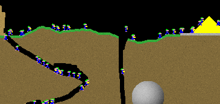

Miners4k

Play now!
You need to have a good version of
java installed to play Miners4k.
If you do, click
here to play Miners4k now.
NEW: You can now also get the source code!
Game rules
The goal of Miners is to dig tunnels that lead the Miners to the gold, then back to the starting position again.
The miners are simple creatures:
- Miners will walk straight forward until they hit a wall or get bored.
- When a miner hits gold, he will pick up a chunk of the gold, but only if he isn't already carrying some
gold.
- If a miner carrying gold enters either starting platform, he will drop the gold there.
- When a miner faces a steep cliff in front of him, there's a 66% chance he will try to jump over it.
- After a miner has hit a wall and changed direction, there's a 66% he will jump back in the direction he came
from.
- A miner that falls more than 100 pixels will die.
Huh? What IS this?
Miners4k is an entry for the Java 4K [Game]
Programming Contest (2006 edition)
It was made by Markus Persson.